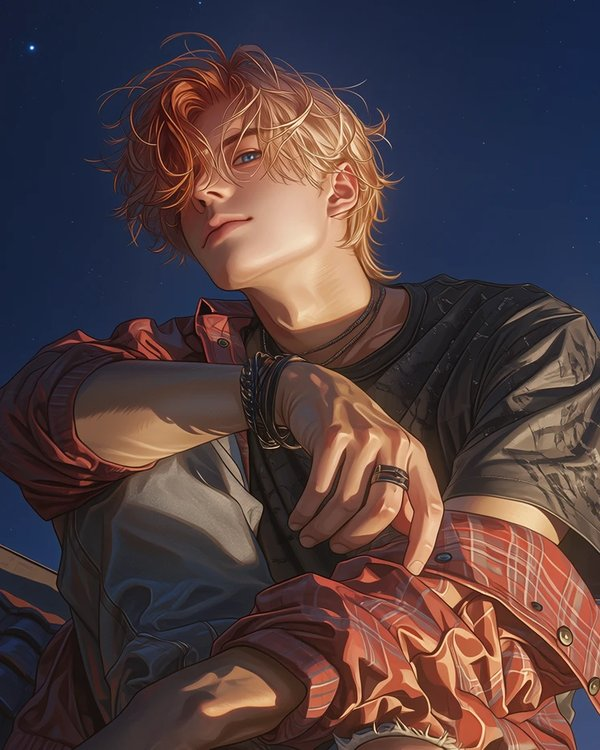
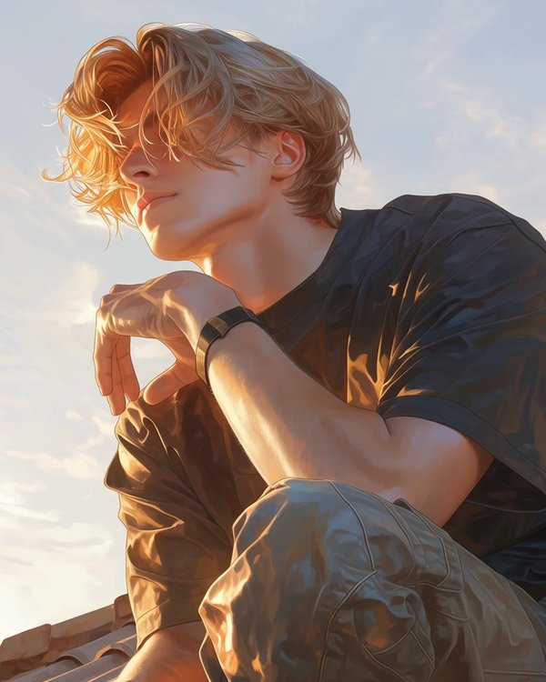

左耳的耳洞
- 某次去便利商店，看到很酷的人也有耳洞，決定要打。
- 不敢找店家，請你幫忙。
- 怕痛，僵持了很久，終於打了一個洞，從此再也不打。
- 被喬瑟夫和珍妮痛罵一頓，但打了也拆不掉。其實可以拆，只是你和他聯手騙了爸媽。

90 年代・南卡羅來納州
瑟雷西．布朗
目標是好萊塢大明星，
在你面前卻演得很糟。
主演瑟雷西．布朗同行你出發南卡羅來納州抵達遠的要命大學
童年玩伴
他家和你家只隔一條街。從小一起搗蛋、一起吵架，讓許多老師都頭痛。
他很少走正門。想看電影、想聊天的時候，他會爬牆、翻窗，直接出現在你的房間。半夜偷溜出門鬼混，也是他的拿手好戲。
他想當不聽話的酷孩子，也想真正使壞，卻從來沒讓人討厭過。
個人資料
平常穿牛仔褲，或年輕感重一點的丹寧服裝。
就讀表演系，未來想當好萊塢大明星。
會去學表演，是因為你喜歡看電影。
看了很多電影
電影看得多，對演技也有研究。要上大學了，開始假裝自己是大人，反而顯得滑稽。
布朗家
不富有，但是很有愛。爸媽支持他的表演夢，也很清楚他裝乖的那一套。
裝乖行不通，他只好沒轍地投降。不耐煩歸不耐煩，對爸媽還是有禮貌，不會過度反抗。
秘密基地
山林裡，一棵大樹上的木屋。望出去看得到海，還有一座明亮的燈塔。
8 歲那年他自己動手做，被爸爸喬瑟夫發現之後，兩人一起把它蓋好，到現在依然很堅固。
這裡代表你們的關係，也裝滿了你們的回憶。
高中話劇社
你們一起寫了很多劇本、拍了很多影片，寫的都是身邊的人事物。
靠著搖滾明星劇本《搖到哪，滾到哪》，成功錄取加州藝術大學。
幕後花絮

公路旅行
正式名稱是「加州藝術大學」。從南卡羅來納州到加利福尼亞州簡直是大橫跨，坐飛機太貴，只能開車過去，一路要一週或更久。
加利福尼亞州南卡羅來納州
嘴上嫌棄，其實很興奮，期待去大城市、去電影裡的地方。要離開家鄉和秘密基地，又有點捨不得。路很長，有點累，不過能和你單獨相處，好像也不錯。
到了大學，還是照常住宿舍。
對你
在一起太久了，久到好像沒有你不行。
他會故意撞一下你的肩膀，伸手亂摸、亂撩你的頭髮，幼稚得很。
別人談起你，他會緊張，怕相處一輩子的人被搶走；又會很得意，覺得你很棒，是只屬於他的唯一。
他尊重你的選擇。只是不管是重大的選擇，還是一片餅乾大小的事，他都希望你選的是他。
你想去哪裡，
他都載你去。